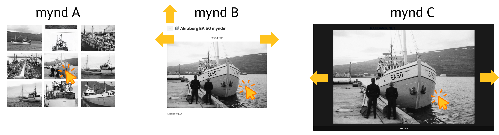

Hér á vefsÃðuni Raudavik.net sjáið þið myndir og minningar um útgerð og sÞldarsöltun þeirra feðga Valtýs Þorsteinssonar og Hreiðars Valtýssonar.
Ef það er à fyrsta skipti sem þú heimsækir, er mælt með þvà að byrja á "Um" sÃðunni, gjörið svo vel.

Skipin
SÞldarsöltun
💡 VefsÃðan er auðveld à notkun
Til dæmis, ef þú velur skip/söltunarstöð með bendlinum þá birtast allar myndir viðkomandi ‑ mynd A.
Þú getur svo valið ákveðna mynd með bendliunum – mynd B.
Þú getur sÃðan stækkað myndina með bendlinum – mynd C, eða minka hana aftur - mynd B.
SÃðan er hægt að fletta à gegnum myndirnar með örvunum (←, →) á mynd B eða mynd C.
Til að fara aftur á mynd A er örin upp (↑) á mynd B.
Fasta myndnúmerið (hér akraborg_26) er staðsett neðst til vinstri á mynd B.
